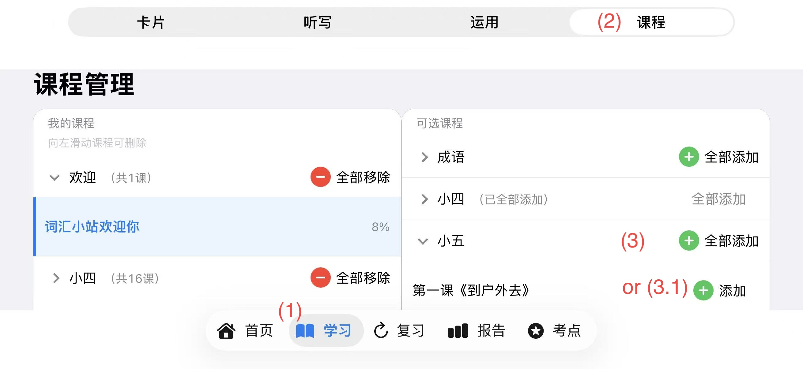

如何添加课程
使用场景说明
孩子要开始学新内容前，需要先把要学的课加进 App。加好课程后，才能在「卡片」「听写」「运用」里练习词汇。
功能说明
WordHub 按年级（例如小四、小五、小六）整理好了华文词汇课程。你可以从「可选课程」里挑选，加入「我的课程」。加好后，孩子随时可以在不同课程之间切换。
操作步骤
- 点底部 「学习」 标签，进入学习页面。
- 点页面顶部的 「课程」，打开课程学习界面。
- iPad用户在课程页右侧（或者如果是iPhone竖屏，在下方）的「可选课程」里，按年级找到要学的课，点 「添加」；已加入的课会显示 「已添加」。
- 关闭弹窗后，在课程栏用 「年级」选择器 和 「课程」选择器 切换到刚加好的课，就可以开始学习了。

步骤 1–3：添加课程
常见问题 / 小提醒
- 想一次加一整册？在「可选课程」里可以点 「全部添加」。
- 想删掉某门课？在「我的课程」列表里向左滑动该课程即可删除。
- 不小心删掉某门课？别担心，学习记录不会被删除，在「可选课程」列表里重新添加该课程即可。
- （学生身份）在首页点 「进入」也会直接打开 「学习 · 课程」，方便快速选课之后直接开始学习。